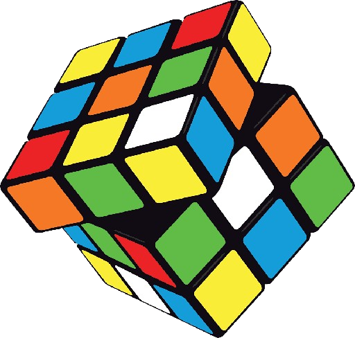
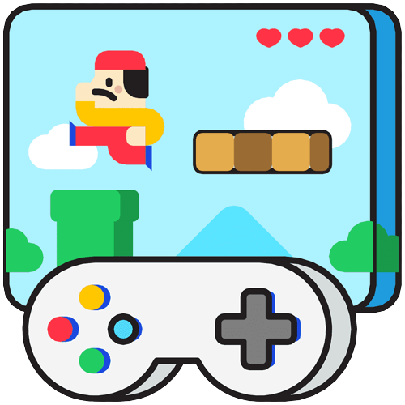

Mis principales hobbies son los siguientes:
Está página está dedicada pura y exclusivamente para hablar sobre los diferentes hobbies que tengo, las actividades que más me gusta realizar en mi día a día y en mi vida en general, con lo que me gusta pasar el rato y disfrutar.
~ Futbol ~
Dentro de todo lo que me gusta hacer, sin duda alguna el futbol es la cosa principal y más relevante que puedo mencionar. Amo todo lo que tiene qué ver con el deporte, tanto jugarlo como verlo, actualmente me encuentro jugando un torneo de futbol rápido organizado por ITSON, y suelo ver partidos de futbol profesional siempre que hay y me son llamativos. Soy aficionado del América de México desde que tengo memoria, y siempre estoy a muerte con mi equipo, listo para apoyar cuando se requiere.
~ Cubos de Rubik ~
Uno de los hobbies que he tenido desde la secundaria es el armar cubos de Rubik, fue una actividad que descubrí un día que le regalaron un cubo a mi hermano y no supo armarlo, entonces yo me propuse a ayudarle, desde ahí empecé a descubrir que el mundo de los cubos era más grande de lo que pensé, con muchos fans y seguidores, competencias, torneos y distintas categorías y tipos de cubos para armar. En su tiempo me dediqué al speedcube como principal actividad. Mi mejor tiempo en armar un cubo de Rubik 3x3 es de 9.47 segundos, a 3 segundos del récord nacional. Actualmente ya no practico tanto el speedcube, pero sigo armando distintos tipos de cubos, de diferentes formas y tamaños, sigue siendo una actividad que me gusta mucho.
~ Videojuegos ~
Como la mayoría de personas de mi edad actualmente, y considerando también que estudio Software, es más que obvio que una de mis aficiones serían los videojuegos. Si bien no los juego tan frecuentemente como la mayoría de mis amigos, compañeros y conocidos, la verdad es que toda mi vida los he tenido cerca y me han ayudado a disfrutar de tardes sin nada qué hacer o para distraerme de actividades largas o malos ratos. Mi primera consola fue una PlayStation 2 a los 6 años, después he tenido una PSP y una PS4, pero sin duda los juegos flash de computadora y de teléfono son los que más me han acompañado, por su accesibilidad y variedad. Actualmente soy muy fan de los juegos de tipo "Campaña", me gusta la tranquilidad y cosas que hay por hacer, siento que los juegos online tienen un frenetismo mayor y muchas veces en lugar de relajarme termino más estresado. Sin duda uno de los juegos a los que más horas le dediqué alguna vez fue FIFA19, y una gran hazaña que tengo en ese juego es lograr un TOP 7 mundial en un modo de juego llamado "Squad Battles", estoy seguro que es mi hazaña más grande en los videojuegos.